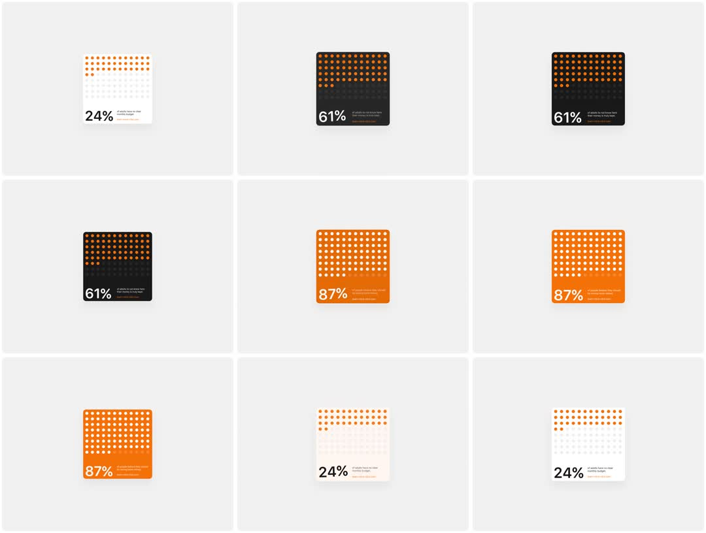

A single stat card cycling through three theme states (white 24% -> black 61% -> orange 87%): a 10x10 dot grid fills top-down in the accent color while the card background wipes to the new theme color and the big percentage rolls to its new value.
Media
Frame-by-frame

0-15%
White card, 24%: top rows of the dot grid lit orange, rest grey; small caption text right of the number.
15-30%
Transition: a fill wave sweeps the dot grid top-down; the card bg wipes white->black following the same wave front; number rolls 24->61%.
30-45%
Black card, 61%: orange dots over black; settled.
45-65%
Second wave: dots flip to white holes as bg wipes to saturated orange; number rolls to 87%.
65-80%
Orange card, 87%: white dots; settled; subtle scale-up of the card during the transition.
80-100%
Third wave back to white/24%; loop.
Build prompt
Rebuild this interaction 1:1: a single stat card cycling through three theme states (white/24% -> black/61% -> orange/87%). A 10x10 dot grid fills top-down in the accent color while the card background wipes to the new theme color behind the same wave front, and the big percentage rolls to its new value.
## Integration
Integration: stack-agnostic spec - springs given as stiffness/damping, timed motions as duration + curve, canvas/shader notes are perf guidance only; map every value to your framework and animation library of choice.
## Scene
One stat card: 10x10 grid of dots left, big percentage numeral with a small caption to its right. State 1: white card, orange top rows lit, rest grey. State 2: black card, orange dots. State 3: saturated orange card, white dots.
## Motion spec
Pattern: autoplay 3-state cycle with wave transitions.
- Hold each state ~1.2s.
- Transition ~900ms: a fill wave sweeps the dot grid top-down; each dot flips color in a 120ms pop, 8ms stagger per row; the card background wipes to the new theme color following the same wave front.
- Number rolls (odometer translateY) synced with the wave, landing as the wave completes.
- Card scales 1 -> 1.03 during the transition, settling back on hold.
- Third wave returns to white/24%; infinite loop.
## Calibration
- The wave is the whole idea: dots, background, and number share one top-down front - they must stay in lockstep.
- Per-dot pop 120ms with 8ms row stagger; the wave should read as liquid, not rows snapping.
- Scale bump to 1.03 is the only emphasis - no shadow change, no border flash.
## Reduced motion
States crossfade (opacity, 200ms); number swaps without rolling; no wave, no scale.
## Don't miss
- The background wipe follows the wave front spatially - not a full-card fade.
- Dots on the orange state are white "holes", inverting the figure/ground.
- Numbers roll with tabular-nums digit strips; never a text swap.
Mechanics
trigger
autoplay cycle (3 states)
elements
stat card, 10x10 dot grid, big percentage, caption
properties
dot fill color per row (wave front), card background (wipes with wave), odometer number, card scale 1->1.03 during transition
timing
hold ~1.2s per state, wave transition ~900ms, number roll synced
easing
wave front ease-in-out; per-dot 120ms color pop with 8ms row stagger